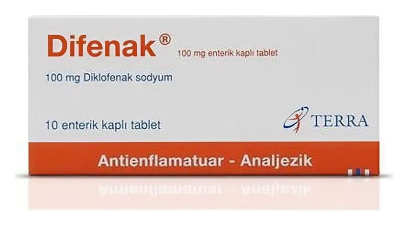

Difenak 100 mg Enterik Kaplı Tablet, 10 Adet

Ne için kullanılır
KT · Bölüm 1• DİFENAK kiremit kırmızısı renkli, yuvarlak, her iki tarafı hafif dışa doğru bükülmüş, enterik kaplı tablet şeklinde sunulmaktadır. • Her bir tablet 100 mg etkin madde (diklofenak sodyum) içerir. • DİFENAK, ağrı ve iltihap tedavisinde kullanılan “steroidal olmayan iltihap giderici ilaçlar” (NSAİİ’ler) isimli bir ilaç grubuna dahildir. • 10 ve 30 tabletlik ambalaj miktarlarında bulunmaktadır. Bu ilacı kullanmaya başlamadan önce bu KULLANMA TALİMATINI dikkatlice okuyunuz, çünkü sizin için önemli bilgiler içermektedir. • Bu kullanma talimatını saklayınız. Daha sonra tekrar okumaya ihtiyaç duyabilirsiniz. • Eğer ilave sorularınız olursa, lütfen doktorunuza veya eczacınıza danışınız. • Bu ilaç kişisel olarak sizin için reçete edilmiştir, başkalarına vermeyiniz. • Bu ilacın kullanımı sırasında doktora veya hastaneye gittiğinizde doktorunuza bu ilacı kullandığınızı söyleyiniz. • Bu talimatta yazılanlara aynen uyunuz. İlaç hakkında size önerilen dozun dışında yüksek veya düşük doz kullanmayınız.
DİFENAK aşağıdaki rahatsızlıkların tedavisinde kullanılabilir:
Kireçlenme (osteoartrit), eklemlerde ağrı ve şekil bozukluğu (romatoid artrit) ve sırt, boyun göğüs kafesi eklemlerinde sertleşme ile seyreden ağrılı ilerleyici romatizma (ankilozan spondilit) belirti ve bulgularının tedavisi ile akut guta bağlı eklem iltihabı (akut gut artrit), akut kas-iskelet sistemi ağrıları, ameliyattan sonraki ağrı (postoperative ağrı) ve ağrılı adet görme (dismenore) tedavisinde endikedir.
DİFENAK’ın nasıl etki gösterdiği ya da size neden verildiği konusunda sorularınız varsa lütfen doktorunuza danışınız.